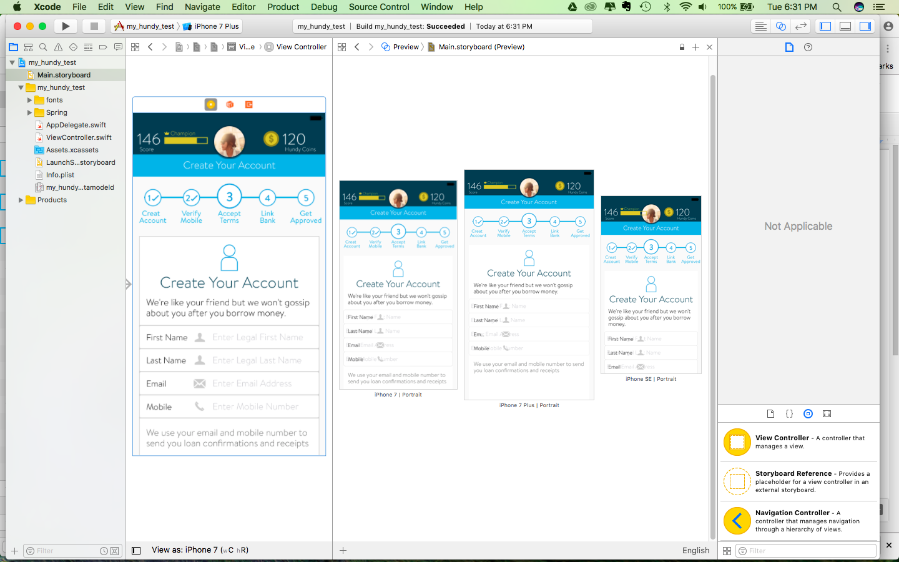

Hundy is a money-lending app where users can take out small micro-loans for short periods of time easily without having to apply through a bank, or pay the exorbitant fees set by payday lenders. Hundy’s main purpose is to be a non-predatory alternative to payday loans. A Beta version of Hundy with minimal functionality was released for Android in early 2016. I was brought on in June 2016 to flesh out the product vision and design the app for the iOS public release.
One of the early steps to designing Hundy was to do some general research on the psychology of borrowing, happiness, banks and credit unions. I interviewed a number of Hundy Beta’s users as well as future potential users to find out their motivations for using Hundy and get a first hand look at their daily experiences and associations with money.
View Example User InterviewGoing forward, I needed to identify and cultivate the personality that would allow Hundy to embody the 3 goals listed above. I came up with 5 "Personality Traits" that became the criteria for my game plan.
UI that mirrors the user flow makes multi-step processes seem simple, and easily navigable. Concise labels, and
All information pertaining to payments is readily available. I wanted to make absolutely certain that there weren’t any hidden fees and that the user is never surprised by any transactions.
Email and chat integration directly in the app allows the user to contact support immediately and easily.
In our research, we discovered that personal loans are by far the most positively associated type of loan on both the side of the borrower and the lender. Borrowers react positively to the fact that they feel cared for by the lender (this notion extends to also to credit unions vs banks), and the lender feels good about being able to help out another person. Personal loans are also the type of loan that borrowers feel the most committed to paying back, even without official payment plans.
Since some of our users are likely to be feeling vulnerable, having to ask to borrow money, we wanted to create a community that was supportive and empathetic. Users can communicate with one another in a community setting, give advice about shared experiences and and even help fellow users get a loan. Users who are not able to pass the initial credit check can tell their story and have other borrowers as well as lenders advocate for their character, thus giving them a path to a loan based on personal recommendations within the community.
View Wireframes and Previous IterationsAt the core of Hundy’s company purpose, we want users to be improving their lives by using the app. Providing users with educational material is an additional resource that is helpful to them, makes the user feel cared for. Educational resources also provide additional incentive for a user to open the app and participate in the community even if they do not currently have a loan out as a borrower or lender.
Gamification allows us to provide a constant flow of positive feedback to our users with wanted behaviors, allowing us to indirectly control the way that they use the app. Quantifying a user’s “character value” in this way, encourages our users to engage and become invested in their status within the community. Additionally, it gives us some insight into our users - who will be a low-risk borrower, meaning who would be a low-risk for not paying back their loans, vs a high-risk borrower who might take out a loan and then bail. With constant engagement, a higher character score shows both a want to improve their relationship with money, as well as a user’s personal investment in our community, and therefore likelihood to continue using it.
Providing compelling long-term privileges and rewards gives our users reason to want to keep coming back to engage with Hundy and reach their goals. In our research, we’ve found that users (both lenders and borrowers) are particularly compelled by the idea of helping others. The idea of being able to transition from borrower to lender, is especially enticing, not only because reaching that goal would be indicative of personal growth and improvement in financial circumstances, but also for the humanitarian aspect of being able to help others out a situation that they were once in as well. Hundy provides users this and various other opportunities to help others with increased status levels.
To reduce any confusion about how features should be behave across different devices and to get a better idea of any design limitations that implementation might pose, I downloaded Xcode, and have been using the interface builder, AutoLayout, constraints and some basic Swift to prototype various screens.
